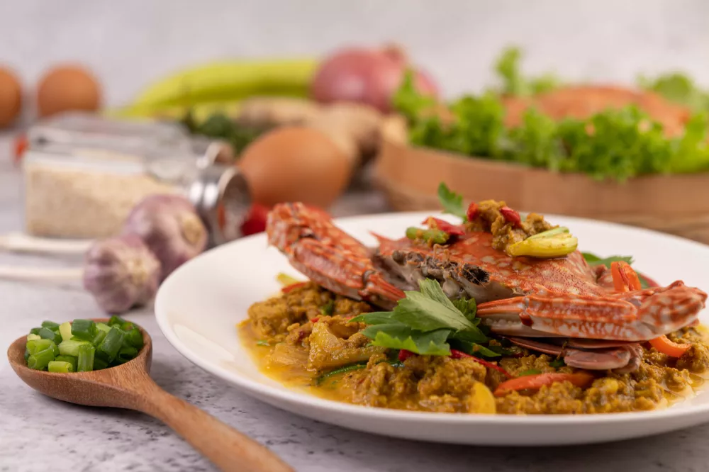

🔥 Cari au feu de bois
Authenticité
Des saveurs vraies, fidèles aux traditions
Une cuisine créole et métropolitaine fidèle aux traditions, préparée maison avec des produits frais et de saison, pour des saveurs vraies et généreuses.
Voir la cuisine